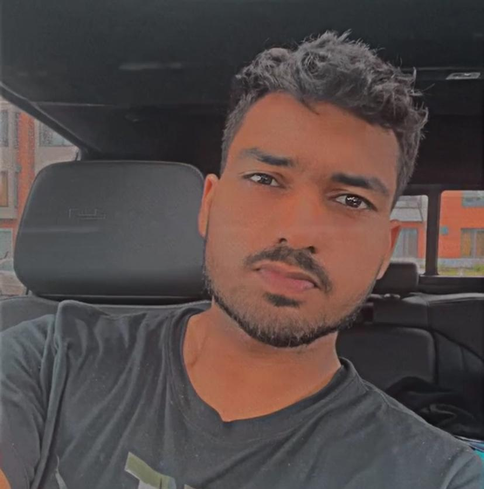

Raghav Sharma
Summary
Dynamic and dedicated professional with a strong background in graphic design and a passion for
coding and web development. Equipped with a Bachelor’s degree in Web and Graphic Designing from
CDI College, Montreal, Canada, and three years of hands-on experience in graphic design. Seeking to
leverage my skills and experience to transition into a full-stack developer role. Avid traveler, reader, and
cricket enthusiast.
Education
- Bachelor of Web and Graphic Designing
CDI College, Montreal, Canada
[2022]
- Diploma in Grphic Designing, OXl Multimedia, Amritsar, India [2019]
Work Experience
- Graphic Designer
Rsadverts, Montreal
[2019] – [2023]
Designed and developed graphics for various marketing materials including brochures, banners, and websites.
Collaborated with clients to understand their needs and deliver high-quality designs that met their specifications.
Utilized design software such as Adobe Creative Suite (Photoshop, Illustrator, InDesign) to create visually appealing content.
Managed multiple projects simultaneously, ensuring timely delivery and client satisfaction.
Skills
-
Web Development: HTML, CSS, JavaScript, React, Node.js
- Graphic Design: Adobe Photoshop, Illustrator, InDesign, Sketch
- Programming Languages: Python, Java, C++
- Tools & Technologies: Git, GitHub, Docker, Figma
- Soft Skills: Team collaboration, problem-solving, time management, effective communication
Certifications
-
Certified Graphic Designer
OXL Multimedia, 2019
-
Certified Web Developer
CDI College, 2023
Awards & Achievements
- Best Graphic Designer Award
OXL Multimedia, 2019
- Employee of the Month
OXL Multimedia, 2019
Interests
- Traveling
- Reading
- Playing Cricket
Reference
Available upon request.